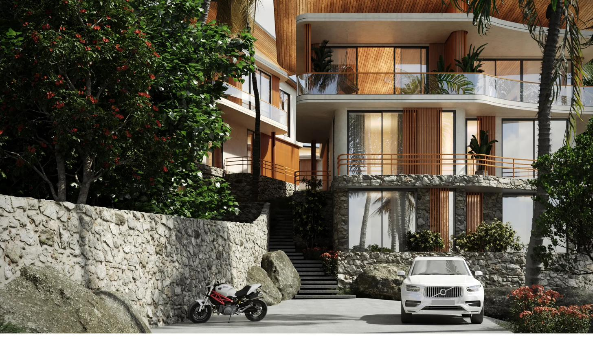

Building on a hillside is slower than building on flat land, and that is exactly the point. Every terrace at Gaia is cut to follow the contour of the hill, so that each residence keeps its own clear line to the sea.
It has been a remarkable few months on site. What began as a set of foundations carved into the slope above Chaloklum bay is now unmistakably a collection of homes. The primary structures are up, the bay-facing terraces are formed, and from the upper level you can finally stand where the living rooms will be and see exactly what residents will see: a wide, uninterrupted sweep of the Gulf of Thailand.
The structure is up
The main reinforced frames for the upper and lower residences are complete. Walking the site today, the geometry of the project reads clearly: the staggered, stepped layout that lets every home sit above the roofline of the one in front, so nothing stands between your terrace and the horizon.

Access roads and the parking court have been cut and graded, and the routing for water, power, and drainage is being laid through the site. These are the unglamorous milestones that rarely make it into a brochure, but they are the ones that turn a building site into a place you can actually live.
The first residence is finished
The most exciting milestone is one you can walk through. Our showroom residence is now complete and fully furnished, with warm timber, natural stone, and full-height glass opening onto the view. It is the clearest answer yet to the question every buyer asks: what will it actually feel like to live here?
- Fully fitted kitchen and bathrooms, finished to the standard of every residence
- Furnished interiors that show the natural-luxury material palette in place
- A working preview of the indoor-outdoor living the whole project is built around
Private viewings of the finished residence are now available by appointment for serious buyers. There is no substitute for standing on the terrace at golden hour and watching the light go down over the bay.
What comes next
Over the coming phase the focus moves to the remaining interiors, the landscaping that will soften the hillside back into jungle, and the shared amenities: the café and rest areas that make Gaia a small community rather than a row of houses. We will keep documenting it here, honestly, milestone by milestone.
More from the hill soon. The Gaia team.